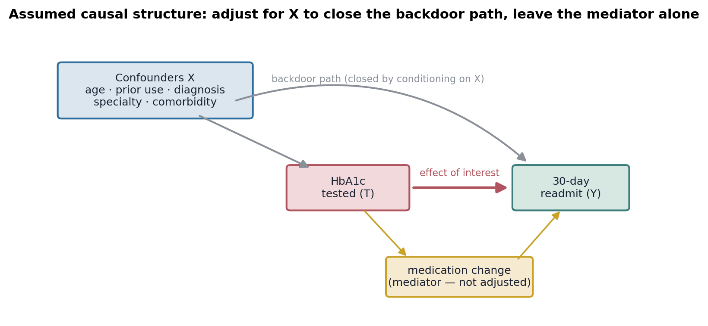
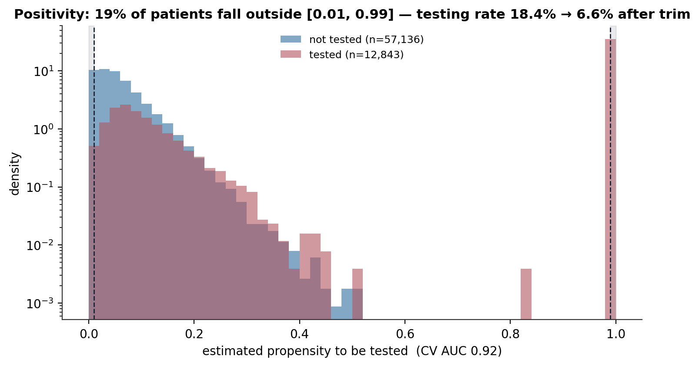
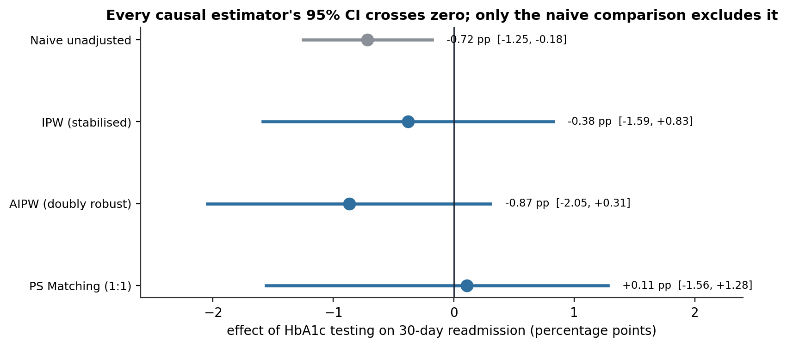
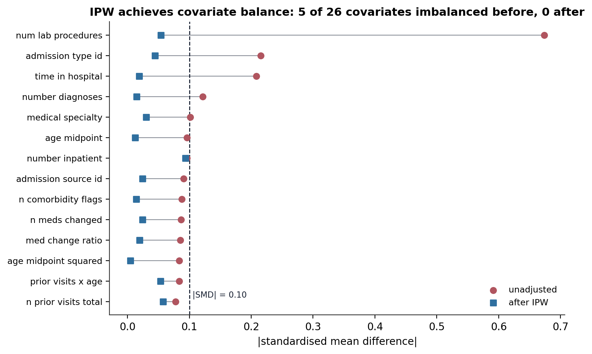
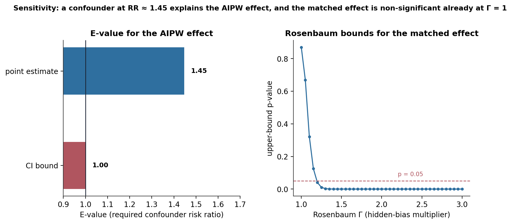
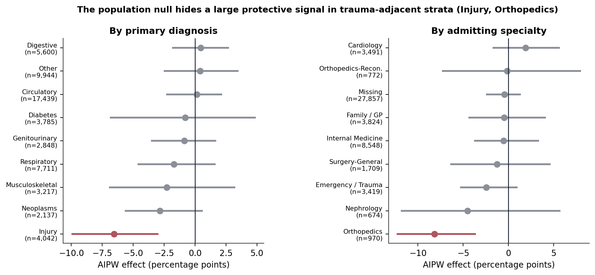

Does HbA1c Testing Cause Lower 30-Day Readmission? A Disciplined Null, With a Trauma-Subgroup Signal
The naive observational comparison says HbA1c testing is protective. Three causal estimators, a 19% positivity trim, and two sensitivity analyses say the population-level effect is indistinguishable from zero — but a large protective signal survives in injury and orthopedic admissions.
A from-scratch causal analysis of whether ordering an HbA1c test during a diabetic inpatient admission reduces 30-day readmission risk. The naive signal: −0.72 percentage points (95% CI [−1.25, −0.18]) — testing looks protective. Positivity is a problem: the treatment-assignment model reaches AUC 0.92, and 19% of patients have a propensity below 0.01 or above 0.99; trimming to the discretionary-testing region leaves 56,723 patients and drops the treatment rate from 18% to 7%. Three estimators disagree in sign: IPW −0.38 pp, AIPW −0.87 pp, 1:1 matching +0.11 pp — and every causal 95% CI crosses zero. Sensitivity: an unmeasured confounder at a risk ratio of 1.45 fully explains the AIPW effect, and the CI-bound E-value is 1.00 — no confounding is needed to reach non-significance. The exception: a −6.5-point effect in injury admissions and −8.2 points in orthopedics, the only two strata whose CIs clearly exclude zero — hypothesis-generating, not confirmatory.
causal inference, propensity score, inverse probability weighting, augmented IPW, doubly robust, propensity score matching, positivity, common support, covariate balance, E-value, Rosenbaum bounds, unmeasured confounding, HbA1c, hospital readmission, null result, Python
Abstract
This study asks whether ordering an HbA1c test during a diabetic inpatient admission causes a reduction in 30-day readmission risk, or whether the protective association seen in an earlier analysis is confounded by who gets tested. The cohort is 69,979 patients (one row per patient), 18.4% of whom had an HbA1c result recorded; the first-admission readmission rate is 9.0%. The naive tested-versus-untested contrast is −0.72 percentage points (95% CI [−1.25, −0.18]). A cross-validated elastic-net propensity model reached an area under the curve of 0.92 for predicting treatment assignment — high enough to signal a positivity problem, and 19% of patients had a propensity outside [0.01, 0.99]. Trimming to that common-support region left 56,723 patients and reduced the treatment rate to 6.6%, defining a population for whom testing was a discretionary clinical decision. On that population, three estimators implemented from first principles — inverse probability weighting (IPW), augmented IPW (AIPW), and 1:1 propensity matching — gave −0.38, −0.87, and +0.11 percentage points, and every bootstrap 95% confidence interval crossed zero. Two sensitivity analyses agreed: the point-estimate E-value was 1.45 (a mild, clinically plausible unmeasured confounder would explain the effect) and the CI-bound E-value was 1.00 (no confounding is required to reach non-significance), while the Rosenbaum critical Γ for the matched effect was 1.00. The population-level causal effect is therefore not distinguishable from zero. Subgroup analysis, however, found a large protective effect in injury admissions (AIPW −6.5 pp, CI [−9.9, −3.0]) and in the orthopedics specialty (−8.2 pp, CI [−12.2, −3.7]) — the only two strata whose intervals clearly excluded zero. These are read as hypothesis-generating signals in a trauma-adjacent population where an HbA1c order plausibly marks broader diabetes-care activation, not as evidence for a testing policy.
Keywords: causal inference, propensity score, inverse probability weighting, doubly robust estimation, positivity, E-value, Rosenbaum bounds, unmeasured confounding, null result
Introduction
An earlier exploratory analysis of this cohort found that patients whose HbA1c was measured during an admission readmitted at a slightly lower rate, and a predictive model gave the “was it tested” indicator a small negative weight in three independent model families. That is an association. Whether it reflects a causal effect of testing — better information leading to better inpatient management and discharge planning — or selection — the kind of patient who gets tested is different in ways that independently lower readmission risk — cannot be settled by the association alone.
This study answers the causal question with a transparent, from-scratch pipeline: state the assumed causal structure as a directed acyclic graph, estimate each patient’s probability of being tested, restrict to the region where that probability is genuinely uncertain, estimate the effect three ways, and stress-test the result against an unmeasured confounder. No causal-inference libraries are used; every estimator is implemented directly.
The mode is exploratory, not confirmatory. The trim threshold ([0.01, 0.99]), the balance criterion (standardised mean difference below 0.10), and the significance level (α = .05) are conventional choices applied transparently rather than pre-registered. The findings narrow the space of plausible causal claims; they do not confirm a single hypothesis.
Method
Data and cohort
The source is the Diabetes 130-US Hospitals for Years 1999–2008 dataset (Strack et al., 2014; Clore et al., 2014). The causal cohort is the patient-grain table produced by an upstream data-engineering stage: one row per patient (the first admission), 69,979 patients, restricted to covariates measured at or before admission. The treatment has_hba1c_tested indicates whether an HbA1c result was recorded during the admission (18.4% of patients); the outcome is readmission within 30 days (9.0% at the first-admission grain — lower than the 11.4% admission-grain rate because repeat admissions inflate the latter). The naive two-proportion contrast reproduces the earlier benchmark at −0.72 pp (p = .011).
Causal framework
The assumed structure (Figure 1) treats age, prior-utilisation history, primary diagnosis group, admitting specialty, and comorbidity load as confounders — pre-treatment variables that affect both the testing decision and readmission risk, opening backdoor paths that are closed by conditioning. A mediator — medication changes prompted by a test result — sits on the front-door path from treatment to outcome and is deliberately not adjusted for. The four identifying assumptions are stable-unit-treatment-value, consistency, positivity (checked directly), and no unmeasured confounding (stress-tested). The last is the one most likely to fail: physicians order HbA1c tests when they suspect a management problem, drawing on clinical information the dataset does not capture.

Propensity score and positivity
Two propensity models were fitted with 5-fold cross-validation and out-of-fold prediction: an elastic-net logistic regression (in a StandardScaler pipeline) and a LightGBM. They agreed closely — cross-validated AUC 0.92 and 0.93, Brier score 0.048 for both, Spearman rank correlation 0.91 between the two propensity vectors — so the transparent logistic model was carried forward as primary. An AUC of 0.92 for a treatment-assignment model is a warning: it means the covariates almost determine who gets tested, which foreshadows a positivity problem (Figure 2). Trimming to the [0.01, 0.99] common-support band removed 19% of patients (6% below 0.01, 13% above 0.99 — a large “near-certain to be tested” group, likely documented-diabetes admissions to endocrinology-adjacent services). The trimmed sample is 56,723 patients with a treatment rate of 6.6%, down from 18.4%. Every estimate below applies to this discretionary-testing population, not to all diabetic inpatients.

Covariate balance
Standardised mean differences were computed for all 26 covariates before and after inverse-probability reweighting (Austin, 2011). Stabilised weights were well-behaved (median 0.98, maximum 6.57; Kish effective sample size 54,104 of 56,723, a 95% ratio). Five covariates were imbalanced before weighting — most severely num_lab_procedures at an SMD of 0.67, because an HbA1c order is itself a lab order — and none after; the largest residual was 0.094 (Figure 3, Table 2).
Estimators
Three estimators of the average effect in the trimmed population were implemented directly, each with a bootstrap 95% CI: stabilised IPW, AIPW (augmented IPW, doubly robust — consistent if either the propensity or the outcome model is correct; Bang & Robins, 2005), and 1:1 nearest-neighbour propensity matching within a 0.01 caliper (which estimates the effect on the treated among matched units; Rosenbaum & Rubin, 1983). The AIPW outcome models were cross-fitted.
Sensitivity analysis
Robustness to an unmeasured confounder was assessed two ways: E-values (VanderWeele & Ding, 2017) on the risk-ratio scale of the population AIPW effect, quantifying the confounder–treatment and confounder–outcome association strength that would explain the result away; and Rosenbaum bounds (Rosenbaum, 2002) on the matched-pairs effect, quantifying the hidden-bias multiplier Γ at which the result becomes non-significant.
Software
Python 3.10 with scikit-learn 1.2, lightgbm, statsmodels, scipy, and numpy. Bootstrap CIs used 1,000 resamples. All headline numbers were recomputed from the persisted estimate and sensitivity tables; the propensity model was refitted deterministically (random_state = 42) and reproduced the persisted AUC of 0.920 exactly.
Results
The naive protective effect does not survive adjustment
The four estimates tell the whole story (Figure 4, Table 1). The naive contrast, resting on no causal assumptions, is −0.72 pp with a CI that excludes zero. Every causal estimator moves it toward or across the null: IPW −0.38 pp [−1.59, +0.83], AIPW −0.87 pp [−2.05, +0.31], matching +0.11 pp [−1.56, +1.28]. The three causal point estimates disagree on sign, but the disagreement is smaller than any one estimator’s standard error — the smallest, AIPW’s, is 0.60 pp, comparable to the full 1.09-pp spread between the point estimates. The AIPW interval comes closest to excluding zero (roughly 84% of it sits below the null) but does not. The causal effect of HbA1c testing on 30-day readmission is statistically indistinguishable from zero. Most of the naive protective signal was selection: tested patients differ from untested patients on lab intensity, admission complexity, and diagnosis mix, and once those differences are balanced the effect disappears into the noise.
Table 1
Effect of HbA1c Testing on 30-Day Readmission, Four Estimators (percentage points; trimmed common-support sample, n = 56,723)
| Estimator | Effect | 95% CI | Key assumptions |
|---|---|---|---|
| Naive unadjusted | −0.72 | [−1.25, −0.18] | None — observational contrast |
| IPW (stabilised) | −0.38 | [−1.59, +0.83] | Positivity, no unmeasured confounding, correct propensity model |
| AIPW (doubly robust) | −0.87 | [−2.05, +0.31] | Positivity, no unmeasured confounding, one of two models correct |
| 1:1 propensity matching | +0.11 | [−1.56, +1.28] | Positivity, no unmeasured confounding, adequate common support |
Note. The naive row is the only one whose CI excludes zero, and the only one resting on no causal assumptions — which is precisely why it is not a causal estimate. Matching estimates the effect on the treated among 3,724 matched pairs.

Table 2
Covariates Imbalanced Before Inverse-Probability Weighting (n = 26 covariates screened)
| Covariate | |SMD| before | |SMD| after |
|---|---|---|
| Lab-procedure count | 0.67 | 0.05 |
| Admission type | 0.22 | 0.04 |
| Length of stay | 0.21 | 0.02 |
| Distinct-diagnosis count | 0.12 | 0.02 |
| Admitting specialty | 0.10 | 0.03 |
Note. Standardised mean differences (Austin, 2011). Five of 26 covariates exceeded the 0.10 threshold before weighting; none did after (largest residual 0.094, on prior inpatient visits). See Figure 3.

The effect is not robust to a mild unmeasured confounder
Both sensitivity analyses point the same way (Figure 6). On the risk-ratio scale the AIPW effect is RR = 0.905 (a 9.5% relative reduction), and its point-estimate E-value is 1.45: an unmeasured confounder associated with both testing and readmission at a risk ratio of 1.45 — beyond what the measured confounders already explain — would fully account for the effect. That is not a strong confounder. “How engaged a patient is with their own diabetes care,” which plausibly raises both the chance a physician orders an HbA1c and the chance the patient avoids readmission, could easily reach it. The CI-bound E-value is 1.00: the upper end of the risk-ratio interval already touches the null, so no unmeasured confounding is required to make the effect non-significant. The Rosenbaum bound for the matched effect tells the same story — its critical Γ is 1.00, meaning the matched-pairs comparison is non-significant already with no hidden bias assumed (only 580 of 3,724 matched pairs are outcome-discordant, split almost evenly 295 to 285).

A protective signal survives in trauma-adjacent admissions
The population-average null hides real heterogeneity (Figure 5, Table 3). Re-estimating AIPW within each primary diagnosis group, eight of nine are null — point estimates from −2.8 to +0.5 pp, every CI crossing zero. The exception is Injury: −6.5 pp, CI [−9.9, −3.0] — nine times the naive overall magnitude, on a base rate near 9%, and the only diagnosis stratum whose interval clearly excludes zero. The specialty breakdown reinforces it: Orthopedics shows −8.2 pp, CI [−12.2, −3.7], again clearly excluding zero. The two findings overlap mechanistically — orthopedic admissions are largely trauma-related — and suggest a coherent story: in an admission whose primary reason is an injury, an HbA1c order marks the point where under-recognised or poorly-controlled diabetes gets picked up and managed, and that activation genuinely lowers rebound risk. Two other strata lean protective without reaching significance (Neoplasms −2.8 pp [−5.6, +0.6]; Respiratory −1.7 pp [−4.6, +1.6]).
These are observational subgroup effects, in a regime where nine strata multiply the false-positive risk, and they cannot be causally validated here. The trimmed-sample testing rates are similar across the major specialties (5–7%), so the orthopedic effect is not simply an artefact of that specialty testing everyone — but confirmation needs a targeted prospective design.
Table 3
AIPW Subgroup Effects — Strata Whose 95% CI Excludes Zero, and Nearest Non-Significant (trimmed sample)
| Stratum | n | n treated | AIPW effect | 95% CI |
|---|---|---|---|---|
| Injury (diagnosis) | 4,042 | 232 | −6.5 pp | [−9.9, −3.0] |
| Orthopedics (specialty) | 970 | 30 | −8.2 pp | [−12.2, −3.7] |
| Neoplasms (diagnosis) | 2,137 | 93 | −2.8 pp | [−5.6, +0.6] |
| Respiratory (diagnosis) | 7,711 | 567 | −1.7 pp | [−4.6, +1.6] |
Note. The other seven diagnosis strata and eight specialty strata have point estimates within roughly 2 pp of zero and CIs that straddle it.

Discussion
Principal findings. The observational signal that HbA1c testing protects against 30-day readmission does not survive proper causal adjustment. After restricting to the common-support region, reweighting, doubly-robust correction, and matching, the population-level effect is statistically indistinguishable from zero across all three estimators, and the effect is not robust to a mild, clinically plausible unmeasured confounder. A large protective effect does appear in injury and orthopedic admissions, but as an observational subgroup finding requiring confirmation.
The mechanism is selection. The strongest pre-adjustment imbalance is on lab-procedure count — an HbA1c is a lab order, and it gets added to panels for patients who are already being worked up intensively. Those patients differ from lightly-investigated patients in ways (severity, engagement, care intensity) that independently move readmission risk. Balancing on the observed proxies for that difference removes most of the naive effect; the E-value says a plausible unobserved proxy removes the rest.
Implication for practice. A standing order for HbA1c testing on all diabetic inpatients, justified by a readmission-reduction argument, is not supported by this evidence at the population level. A narrower argument for testing in trauma and orthopedic admissions, where diabetes is often an under-documented contributor rather than the reason for admission, is consistent with the subgroup findings but rests on effects this design cannot causally confirm. The downstream decision-analysis work should not treat HbA1c testing as an intervention lever, and any cost-benefit scenario that assumes an effect size should flag it as sensitive to confounding at the E-value 1.45 level.
Limitations. This is an exploratory observational analysis with conventionally-chosen thresholds, not a pre-registered study. The trim changes the estimand: results apply to the discretionary-testing population, roughly four in five of whom are untested in the trimmed sample. The no-unmeasured-confounding assumption cannot be tested, only stress-tested, and the stress test fails. The subgroup effects are drawn from nine strata and carry a real multiple-comparisons risk; the injury and orthopedic strata have small treated counts (232 and 30). The matched estimator answers a slightly different question (effect on the treated) than IPW and AIPW.
Conclusion. The honest reading is that HbA1c testing has no demonstrable population-level causal effect on 30-day readmission in this cohort, that the naive protective association was largely selection, and that a trauma-adjacent subgroup signal is worth a dedicated study but not a policy change. This is a null result reached deliberately, and reaching it is the analysis’s contribution.
References
Austin, P. C. (2011). An introduction to propensity score methods for reducing the effects of confounding in observational studies. Multivariate Behavioral Research, 46(3), 399–424. https://doi.org/10.1080/00273171.2011.568786
Bang, H., & Robins, J. M. (2005). Doubly robust estimation in missing data and causal inference models. Biometrics, 61(4), 962–973. https://doi.org/10.1111/j.1541-0420.2005.00377.x
Clore, J., Cios, K., DeShazo, J., & Strack, B. (2014). Diabetes 130-US Hospitals for Years 1999–2008 [Data set]. UCI Machine Learning Repository. https://doi.org/10.24432/C5230J
Efron, B. (1979). Bootstrap methods: Another look at the jackknife. The Annals of Statistics, 7(1), 1–26. https://doi.org/10.1214/aos/1176344552
Rosenbaum, P. R. (2002). Observational studies (2nd ed.). Springer. https://doi.org/10.1007/978-1-4757-3692-2
Rosenbaum, P. R., & Rubin, D. B. (1983). The central role of the propensity score in observational studies for causal effects. Biometrika, 70(1), 41–55. https://doi.org/10.1093/biomet/70.1.41
Strack, B., DeShazo, J. P., Gennings, C., Olmo, J. L., Ventura, S., Cios, K. J., & Clore, J. N. (2014). Impact of HbA1c measurement on hospital readmission rates: Analysis of 70,000 clinical database patient records. BioMed Research International, 2014, 781670. https://doi.org/10.1155/2014/781670
VanderWeele, T. J., & Ding, P. (2017). Sensitivity analysis in observational research: Introducing the E-value. Annals of Internal Medicine, 167(4), 268–274. https://doi.org/10.7326/M16-2607
Zou, H., & Hastie, T. (2005). Regularization and variable selection via the elastic net. Journal of the Royal Statistical Society: Series B, 67(2), 301–320. https://doi.org/10.1111/j.1467-9868.2005.00503.x
Exploratory observational causal analysis on a historical extract; conventionally-chosen (not pre-registered) analytic thresholds. No estimate here confirms a causal effect; the population-level result is a disciplined null, and the subgroup findings are hypothesis-generating only.